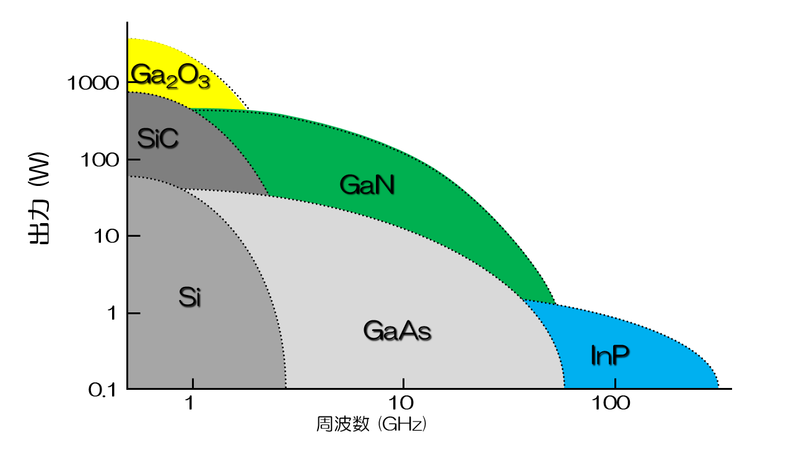
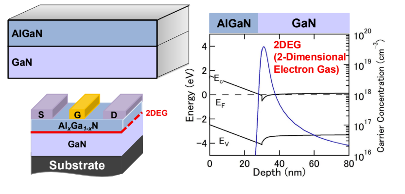
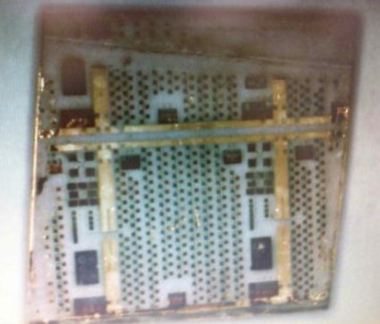
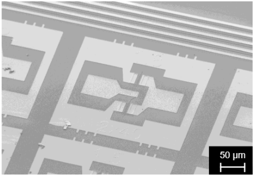
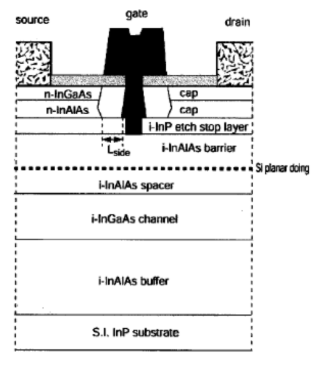
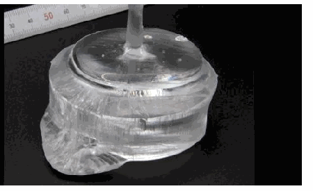

予測できるデバイス設計
GaNの分極物理に基づき、閾値電圧などのデバイス特性を予測する理論の確立を目指します。
Research
Our vision
GaAs、InP、GaN、酸化ガリウムなどの化合物半導体は、高い電子移動度やワイドバンドギャップといった固有の強みを持ちます。複数の材料を積層するヘテロ構造、材料の分極、界面に生じるキャリアを設計し、高周波・高出力・低雑音のデバイス性能を引き出します。

01 / GaN HEMT
AlGaN/GaNヘテロ構造では、両材料の分極の差に由来する電荷によって、界面に高密度の二次元電子ガス（2DEG）が形成されます。この高い電子移動度を活かし、高周波増幅素子へ応用できます。
高周波増幅素子へ展開
高耐圧スイッチング素子へ展開
ロジック素子応用を見据えた研究
高周波・高耐圧用途で発展してきたGaN HEMTを、ロジック素子にも展開することが次の課題です。本研究室では、HEMTの動作を左右する閾値電圧の予測、N極性GaNのプロセス技術、電流コラプスの微小電流波形解析に取り組み、性能と信頼性の両立を目指します。


02 / InP HEMT
InP系HEMTは、室温電子移動度が10,000 cm²/Vsを超える材料系です。極めて高速な電子輸送を活かし、深ミリ波・テラヘルツ帯で動作する増幅素子と低雑音の高周波デバイスを実現します。
極限の高周波特性・低ノイズ特性
高周波増幅素子へ展開
量子コンピューティング用ハードウェアへ応用


03 / β-Ga₂O₃
酸化ガリウム（β-Ga₂O₃）は、超ワイドギャップを持つ半導体です。本研究室では、結晶の抵抗率を適切に評価する手法を検討し、材料の電気特性をデバイス性能へ結びつけます。
高出力領域へ広がる材料特性
東北大学で開発された新製法を活用
結晶評価からデバイス応用へ
貴金属るつぼを使わずに成長した結晶を活用する新たな材料技術も視野に入れ、低コストなマイクロ波帯トランジスタの実現を目指します。

Outlook
GaNの分極物理に基づき、閾値電圧などのデバイス特性を予測する理論の確立を目指します。
InPヘテロ構造デバイスを、深ミリ波・テラヘルツ帯の増幅素子や極低温用低雑音増幅素子へ展開します。
酸化ガリウム結晶の電気特性評価を、マイクロ波帯トランジスタの実現へつなげます。